제목은 짓궂지만,
안에는 OECD 자료가 있었어요 ✍️
Happy Monday — and the start of our final week of summer camp. Today the debate team presented, and the title they chose back on sign-up day has been making us smile ever since: “Why Girls Are Better Than Boys.”
What they actually produced is a good deal more serious than the title suggests.
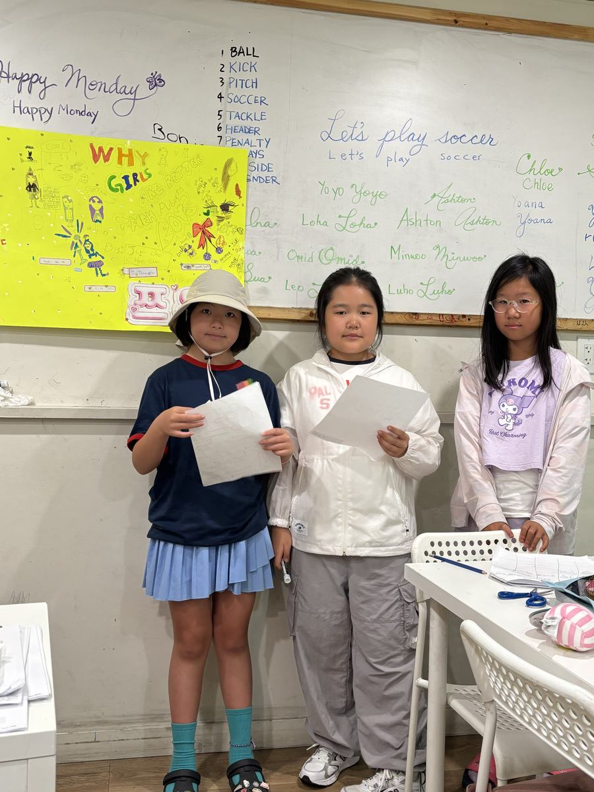
📊 They Went and Found Evidence Not just opinions
A persuasive paragraph is only as good as what holds it up. So instead of stopping at “because we are,” they went looking for something to cite — and came back with international assessment data.
“Studies show that girls often earn higher grades across all subjects, particularly in language and reading, compared to boys… data from international assessments like the OECD show that girls often score higher than boys.”
Whether or not you find the thesis convincing is beside the point. What matters is the shape of the argument: a claim, then a source, then a comparison. That is the structure every essay they write from here on will need.
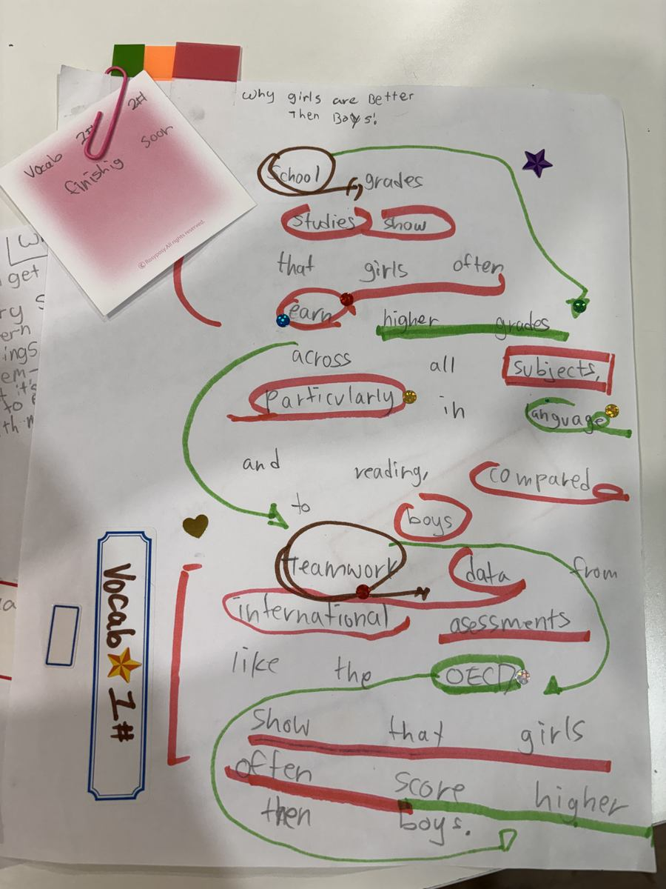
🖍️ The Vocabulary Layer Marked up line by line
Look closely at that page and you will see the second lesson hidden inside the first. Every piece of academic language is circled or underlined — a whole tier of vocabulary that rarely reaches this age group:
The sticky note attached to the sheet simply says “Vocab — finishing soon.” They were tracking their own word list as they wrote.
✍️ And Then Each Wrote Her Own One paragraph, signed
The group did the research together, but the writing was individual — each student produced her own paragraph and put her name on it.
“Girls are better than boys because girls are more cute and prettier. Parents and teachers might praise all girls for being a ‘good listener’ or ‘neat workers’.”
There is something genuinely sharp in that second sentence. She is not only making a claim — she is noticing which behaviours adults tend to praise, and using that as evidence. At eight or nine years old, that is real observation.
And in the margins, above the harder words, the pronunciation written out in Korean — prettier, praise, listener. A bilingual learner making English hold still long enough to use it.
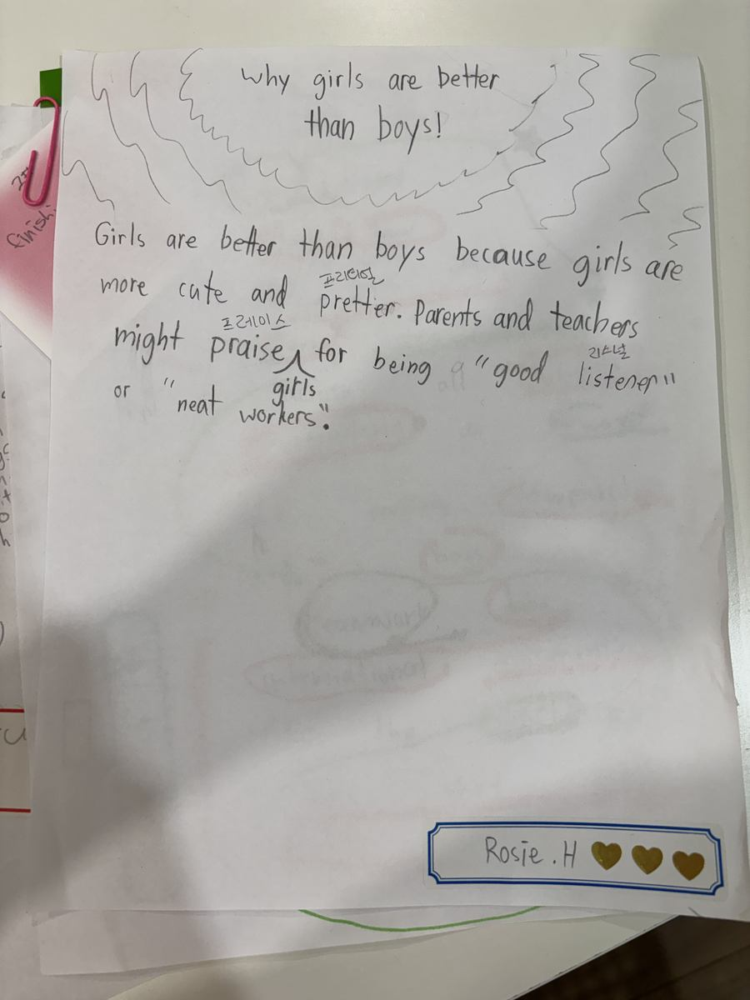
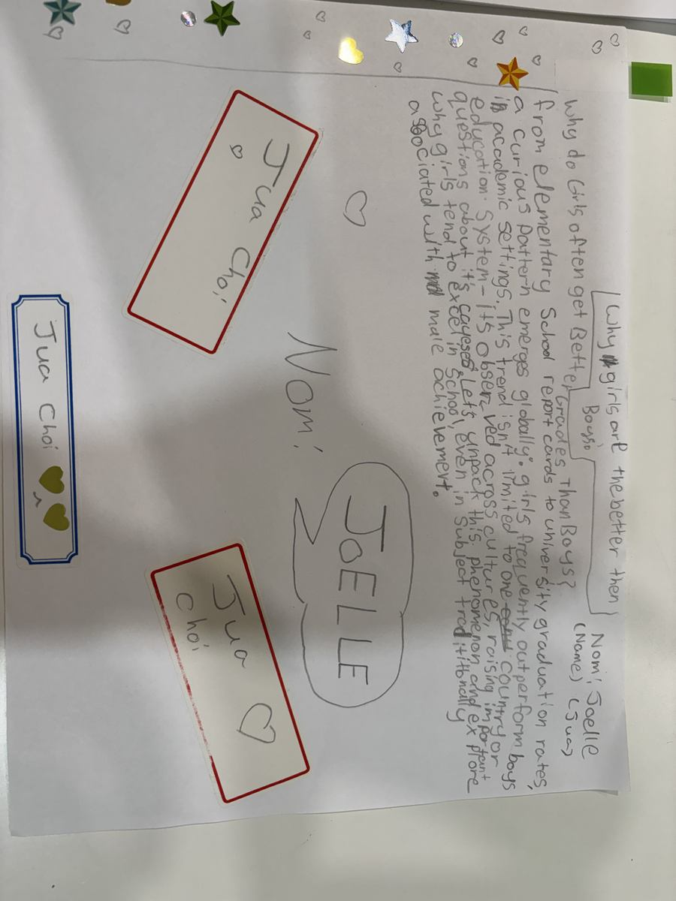
The point of a provocative title
Give a child a topic they actually want to argue, and they will go and find evidence, wrestle with vocabulary well above their level, and stand up in front of a room to defend it. The title got them started. The work is what they will keep.
📝 The Rest of the Morning Back to the desks
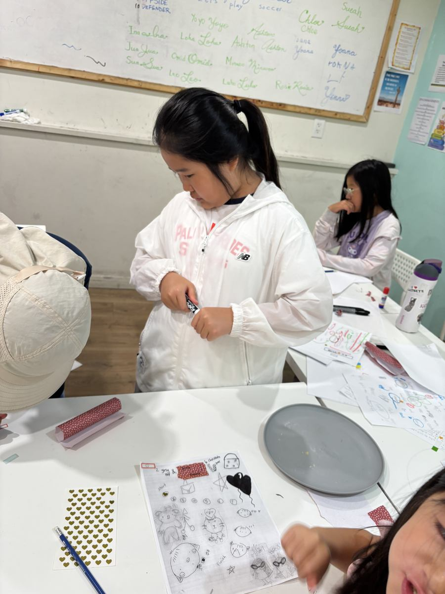
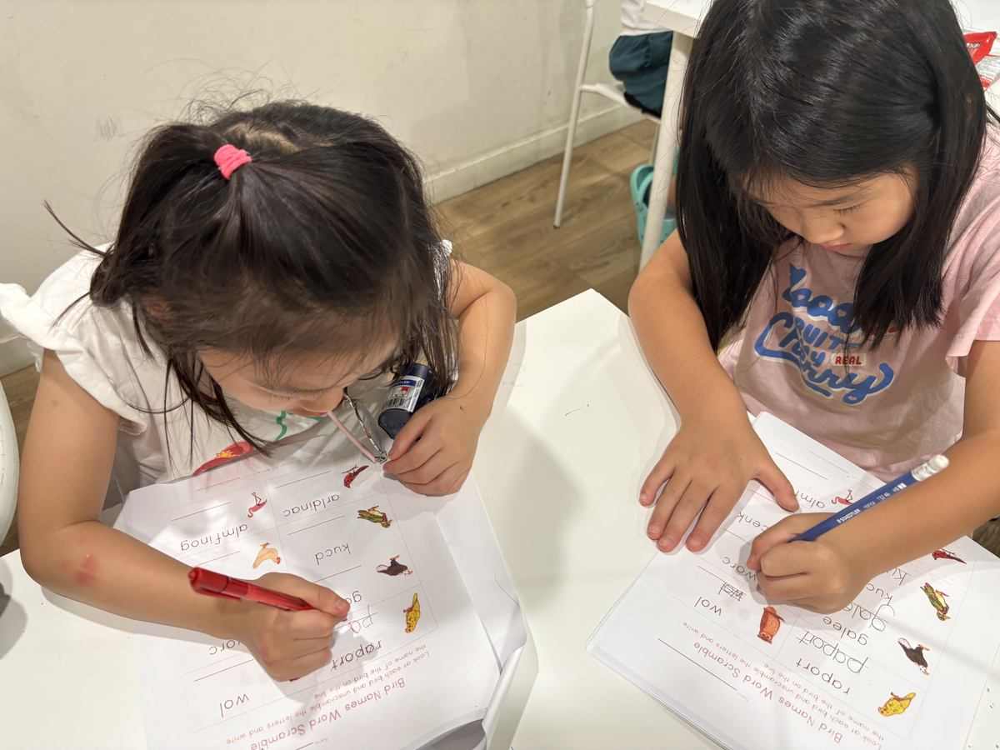
🍚 Lunch & the Pool Blue Mountain, again
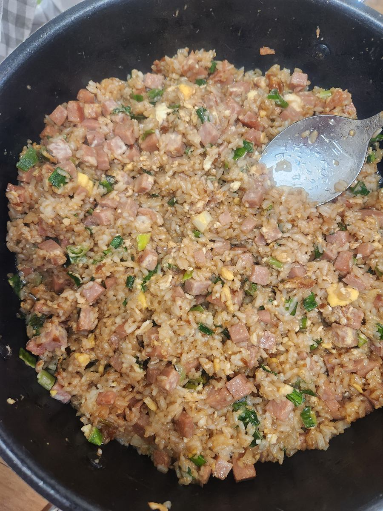
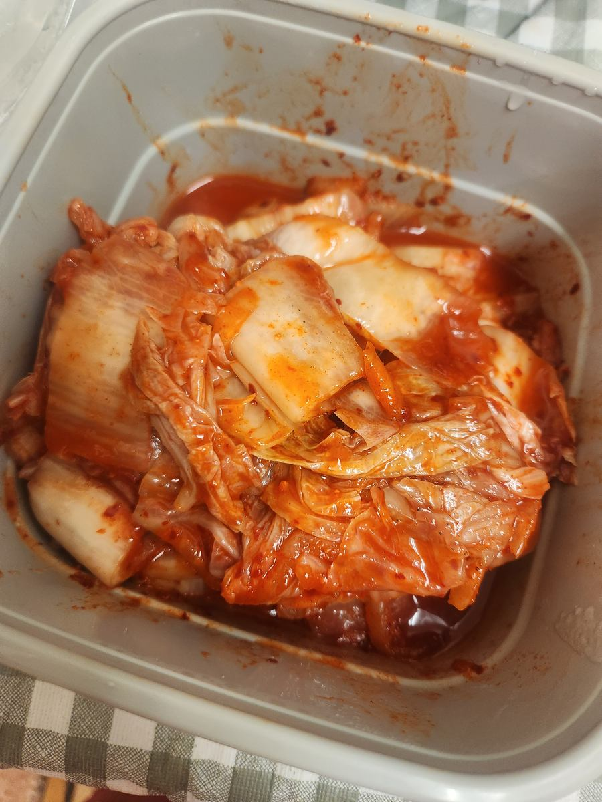
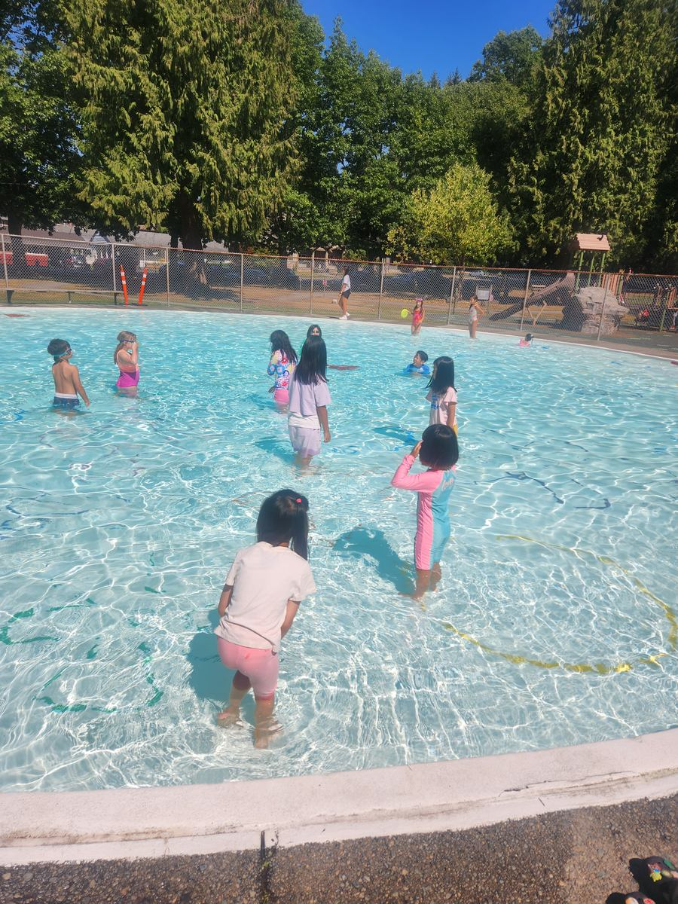
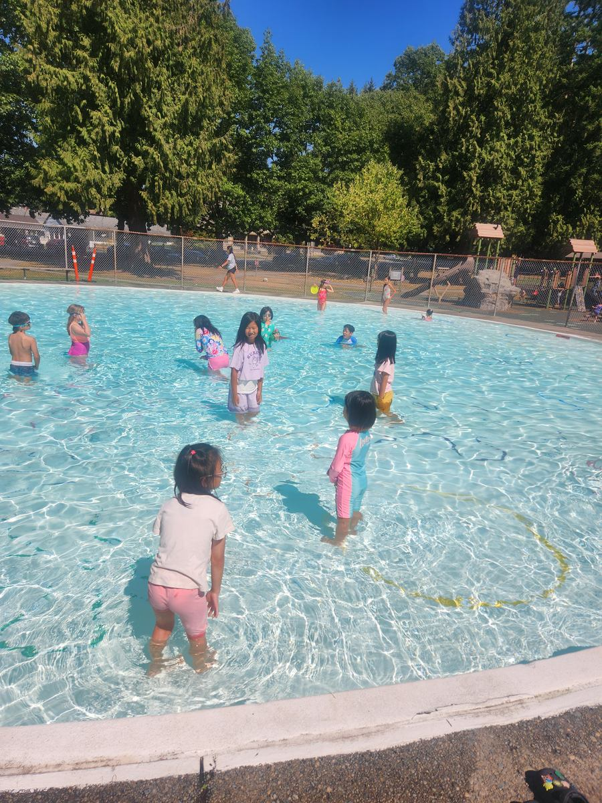
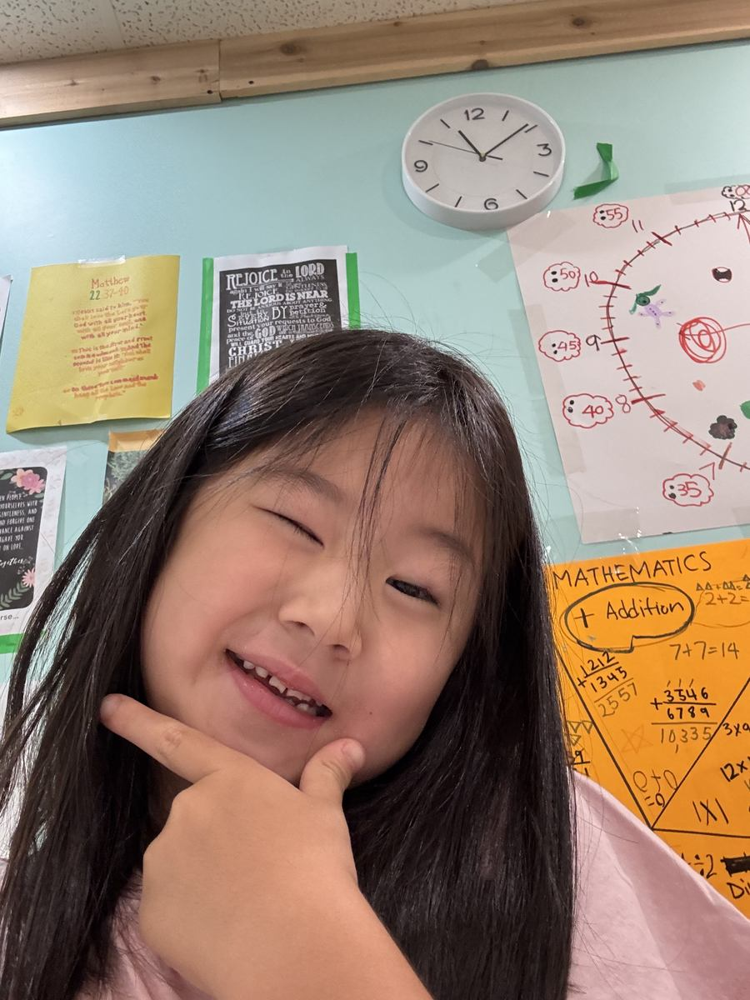
This is our last week of summer camp. The remaining presentations — birds, toys and more — run through the week, and we finish on Friday, August 28.
Ask them tonight what the OECD is. Then ask why girls are better than boys. You will get a spirited answer to at least one of those. ✍️